Graphing Systems of Linear Inequalities
Determine Whether an Ordered Pair is a Solution of a System of Linear Inequalities
The definition of a system of linear inequalities is very similar to the definition of a system of linear equations.
A system of linear inequalities looks like a system of linear equations, but it has inequalities instead of equations. A system of two linear inequalities is shown below.
To solve a system of linear inequalities, we will find values of the variables that are solutions to both inequalities. We solve the system by using the graphs of each inequality and show the solution as a graph. We will find the region on the plane that contains all ordered pairs that make both inequalities true.
To determine if an ordered pair is a solution to a system of two inequalities, we substitute the values of the variables into each inequality. If the ordered pair makes both inequalities true, it is a solution to the system.
Determine whether the ordered pair is a solution to the system.
ⓐ (−2, 4) ⓑ (3,1)
Solution
Solution
-
ⓐ Is the ordered pair (−2, 4) a solution?
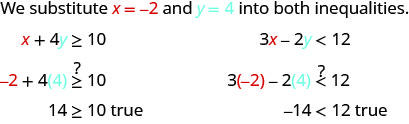
The ordered pair (−2, 4) made both inequalities true. Therefore (−2, 4) is a solution to this system.
-
ⓑ Is the ordered pair (3,1) a solution?
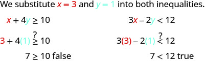
The ordered pair (3,1) made one inequality true, but the other one false. Therefore (3,1) is not a solution to this system.
Solve a System of Linear Inequalities by Graphing
The solution to a single linear inequality is the region on one side of the boundary line that contains all the points that make the inequality true. The solution to a system of two linear inequalities is a region that contains the solutions to both inequalities. To find this region, we will graph each inequality separately and then locate the region where they are both true. The solution is always shown as a graph.
How to Solve a System of Linear inequalities
Solve the system by graphing.
Solution
Solution
![This is a table with three columns and several rows. The first row says, “Step 1: Graph the first inequality. We will graph y is greater than or equal to 2x – 1.” There are two equations givens, y is greater than or equal to 2x – 1 and y is less than x + 1. The table then reads, “Graph the boundary line. We graph the line y = 2x – 1. It is a solid line because the inequality sign is greater than or equal to. Shade in the side of the boundary line where the inequality is true. We choose (0, 0) as a test point. It is a solution to y is greater than or equal to 2x – 1, so we shad in the left side of the boundary line.” There is a figure of a line graphed on an x y coordinate plane. The area to the left of the line is shaded.](../../media/CNX_ElemAlg_Figure_05_06_003a_img_new.jpg)
![The second row then says, “Step 2: On the same grid, graph the second inequality. We will graph y is less than x + 1 on the same grid. Grph the boundary line. We graph the lin y = x + 1. It is a dashed line because the inequality sign is less than. There is a graph which shows two lines graphed on an x y coordinate plane. The area to the left of one line is shaded. The area to the right of the second line is shaded. There is a small area where the shaded areas overlap. The table then says, “Shade in the side of that boundary line where the inequality is true. Again we use (0, 0) as a test point. It is a solution so we shade in that side of the line y = x + 1.](../../media/CNX_ElemAlg_Figure_05_06_003b_img_new.jpg)
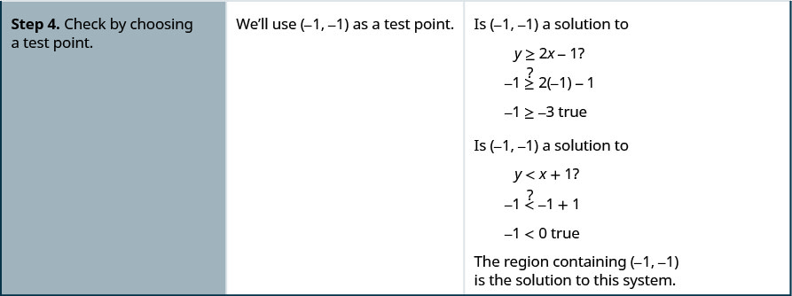
Solve the system by graphing.
Solution
Solution
| Graph x − y > 3, by graphing x − y = 3 and testing a point. The intercepts are x = 3 and y = −3 and the boundary line will be dashed. Test (0, 0). It makes the inequality false. So, shade the side that does not contain (0, 0) red. |
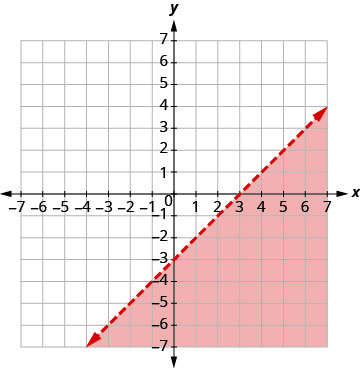 |
| Graph by graphing using the slope and y−intercept b = 4. The boundary line will be dashed. Test (0, 0). It makes the inequality true, so shade the side that contains (0, 0) blue. Choose a test point in the solution and verify that it is a solution to both inequalities. |
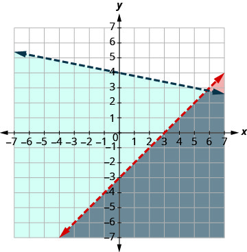 |
The point of intersection of the two lines is not included as both boundary lines were dashed. The solution is the area shaded twice which is the darker-shaded region.
Solve the system by graphing.
Solution
Solution
| Graph , by graphing and testing a point. The intercepts are x = 5 and y = −2.5 and the boundary line will be dashed. Test (0, 0). It makes the inequality true. So, shade the side that contains (0, 0) red. |
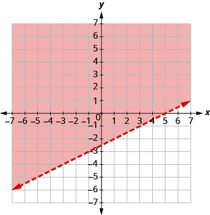 |
| Graph y > −4, by graphing y = −4 and recognizing that it is a horizontal line through y = −4. The boundary line will be dashed. Test (0, 0). It makes the inequality true. So, shade (blue) the side that contains (0, 0) blue. |
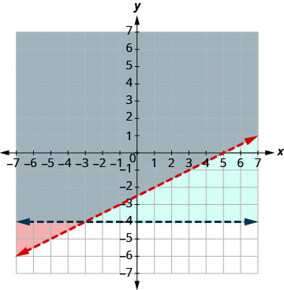 |
The point (0, 0) is in the solution and we have already found it to be a solution of each inequality. The point of intersection of the two lines is not included as both boundary lines were dashed.
The solution is the area shaded twice which is the darker-shaded region.
Systems of linear inequalities where the boundary lines are parallel might have no solution. We’ll see this in Example 5.
Solve the system by graphing.
Solution
Solution
| Graph , by graphing and testing a point. The intercepts are x = 3 and y = 4 and the boundary line will be solid. Test (0, 0). It makes the inequality false. So, shade the side that does not contain (0, 0) red. |
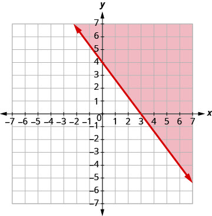 |
| Graph by graphing using the slope and the y-intercept b = 1. The boundary line will be dashed. Test (0, 0). It makes the inequality true. So, shade the side that contains (0, 0) blue. |
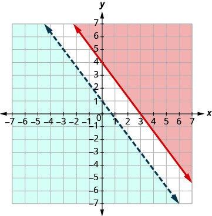 |
There is no point in both shaded regions, so the system has no solution. This system has no solution.
Solve the system by graphing.
Solution
Solution
| Graph by graphing using the slope and the intercept b = −4. The boundary line will be dashed. Test (0, 0). It makes the inequality true. So, shade the side that contains (0, 0) red. |
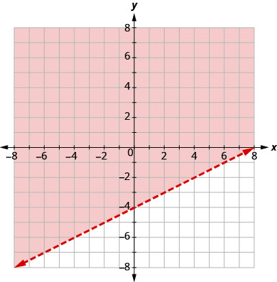 |
| Graph by graphing and testing a point. The intercepts are x = −4 and y = 2 and the boundary line will be dashed. Choose a test point in the solution and verify that it is a solution to both inequalities. |
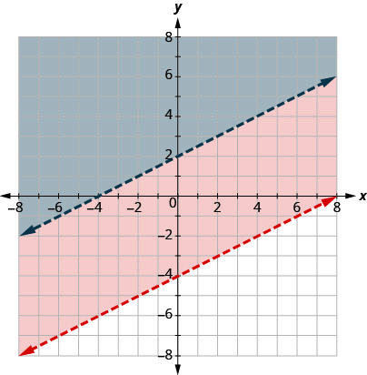 |
No point on the boundary lines is included in the solution as both lines are dashed.
The solution is the region that is shaded twice, which is also the solution to .
Solve Applications of Systems of Inequalities
The first thing we’ll need to do to solve applications of systems of inequalities is to translate each condition into an inequality. Then we graph the system as we did above to see the region that contains the solutions. Many situations will be realistic only if both variables are positive, so their graphs will only show Quadrant I.
Christy sells her photographs at a booth at a street fair. At the start of the day, she wants to have at least 25 photos to display at her booth. Each small photo she displays costs her $4 and each large photo costs her $10. She doesn’t want to spend more than $200 on photos to display.
ⓐ Write a system of inequalities to model this situation.
ⓑ Graph the system.
ⓒ Could she display 15 small and 5 large photos?
ⓓ Could she display 3 large and 22 small photos?
Solution
Solution
-
ⓐ Let the number of small photos.
the number of large photos
To find the system of inequalities, translate the information.
We have our system of inequalities. -
ⓑ
To graph , graph x + y = 25 as a solid line.
Choose (0, 0) as a test point. Since it does not make the inequality
true, shade the side that does not include the point (0, 0) red.
To graph , graph 4x + 10y = 200 as a solid line.
Choose (0, 0) as a test point. Since it does not make the inequality
true, shade the side that includes the point (0, 0) blue.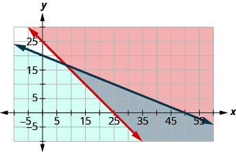
The solution of the system is the region of the graph that is double shaded and so is shaded darker. - ⓒ To determine if 10 small and 20 large photos would work, we see if the point (10, 20) is in the solution region. It is not. Christy would not display 10 small and 20 large photos.
- ⓓ To determine if 20 small and 10 large photos would work, we see if the point (20, 10) is in the solution region. It is. Christy could choose to display 20 small and 10 large photos.
Notice that we could also test the possible solutions by substituting the values into each inequality.
Omar needs to eat at least 800 calories before going to his team practice. All he wants is hamburgers and cookies, and he doesn’t want to spend more than $5. At the hamburger restaurant near his college, each hamburger has 240 calories and costs $1.40. Each cookie has 160 calories and costs $0.50.
- ⓐ Write a system of inequalities to model this situation.
- ⓑ Graph the system.
- ⓒ Could he eat 3 hamburgers and 1 cookie?
- ⓓ Could he eat 2 hamburgers and 4 cookies?
Solution
Solution
ⓐ Let the number of hamburgers.
the number of cookies
To find the system of inequalities, translate the information.
The calories from hamburgers at 240 calories each, plus the calories from cookies at 160 calories each must be more that 800.
The amount spent on hamburgers at $1.40 each, plus the amount spent on cookies at $0.50 each must be no more than $5.00.
We have our system of inequalities.
| To graph graph as a solid line. Choose (0, 0) as a test point. it does not make the inequality true. So, shade (red) the side that does not include the point (0, 0). To graph , graph as a solid line. Choose (0,0) as a test point. It makes the inequality true. So, shade (blue) the side that includes the point. |
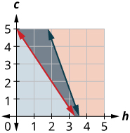 |
The solution of the system is the region of the graph that is double shaded and so is shaded darker.
ⓒ To determine if 3 hamburgers and 1 cookie would meet Omar’s criteria, we see if the point (3, 1) is in the solution region. It is. He might choose to eat 3 hamburgers and 1 cookie.
ⓓ To determine if 2 hamburgers and 4 cookies would meet Omar’s criteria, we see if the point (2, 4) is in the solution region. It is. He might choose to eat 2 hamburgers and 4 cookies.
We could also test the possible solutions by substituting the values into each inequality.
Key Concepts
-
To Solve a System of Linear Inequalities by Graphing
- Graph the first inequality.
- Graph the boundary line.
- Shade in the side of the boundary line where the inequality is true.
- On the same grid, graph the second inequality.
- Graph the boundary line.
- Shade in the side of that boundary line where the inequality is true.
- The solution is the region where the shading overlaps.
- Check by choosing a test point.
- Graph the first inequality.
Section Exercises
Practice Makes Perfect
Determine Whether an Ordered Pair is a Solution of a System of Linear Inequalities
In the following exercises, determine whether each ordered pair is a solution to the system.
ⓐ ⓑ
Solution
ⓐ true ⓑ false
ⓐ ⓑ
ⓐ ⓑ
Solution
ⓐ false ⓑ true
ⓐ ⓑ
ⓐ ⓑ
Solution
ⓐ true ⓑ false
ⓐ ⓑ
ⓐ ⓑ
Solution
ⓐ true ⓑ true
ⓐ ⓑ
Solve a System of Linear Inequalities by Graphing
In the following exercises, solve each system by graphing.
Solution
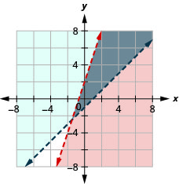
Solution
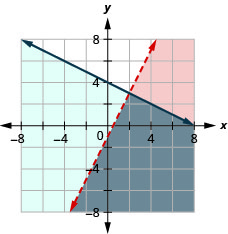
Solution
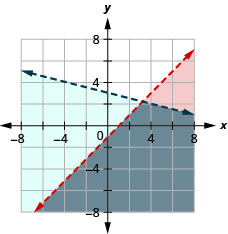
Solution
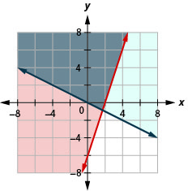
Solution
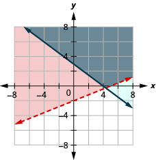
Solution
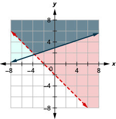
Solution
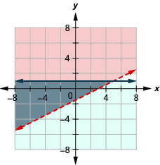
Solution
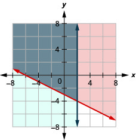
Solution
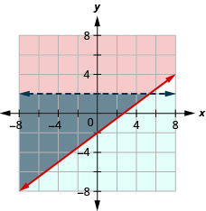
Solution
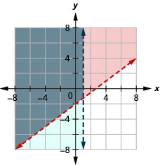
Solution
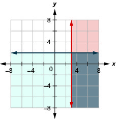
Solution
No solution 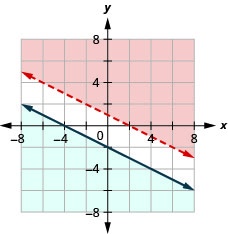
Solution
No solution 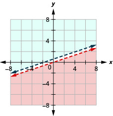
Solution
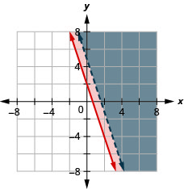
Solution
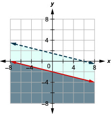
Solution
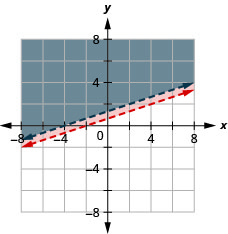
Solve Applications of Systems of Inequalities
In the following exercises, translate to a system of inequalities and solve.
Caitlyn sells her drawings at the county fair. She wants to sell at least 60 drawings and has portraits and landscapes. She sells the portraits for $15 and the landscapes for $10. She needs to sell at least $800 worth of drawings in order to earn a profit.
- ⓐ Write a system of inequalities to model this situation.
- ⓑ Graph the system.
- ⓒ Will she make a profit if she sells 20 portraits and 35 landscapes?
- ⓓ Will she make a profit if she sells 50 portraits and 20 landscapes?
Solution
- ⓐ
-
ⓑ
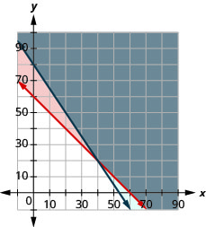
- ⓒ No
- ⓓ Yes
Jake does not want to spend more than $50 on bags of fertilizer and peat moss for his garden. Fertilizer costs $2 a bag and peat moss costs $5 a bag. Jake’s van can hold at most 20 bags.
- ⓐ Write a system of inequalities to model this situation.
- ⓑ Graph the system.
- ⓒ Can he buy 15 bags of fertilizer and 4 bags of peat moss?
- ⓓ Can he buy 10 bags of fertilizer and 10 bags of peat moss?
Reiko needs to mail her Christmas cards and packages and wants to keep her mailing costs to no more than $500. The number of cards is at least 4 more than twice the number of packages. The cost of mailing a card (with pictures enclosed) is $3 and for a package the cost is $7.
- ⓐ Write a system of inequalities to model this situation.
- ⓑ Graph the system.
- ⓒ Can she mail 60 cards and 26 packages?
- ⓓ Can she mail 90 cards and 40 packages?
Solution
- ⓐ
-
ⓑ
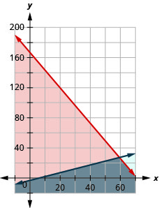
- ⓒ Yes
- ⓓ No
Juan is studying for his final exams in Chemistry and Algebra. He knows he only has 24 hours to study, and it will take him at least three times as long to study for Algebra than Chemistry.
- ⓐ Write a system of inequalities to model this situation.
- ⓑ Graph the system.
- ⓒ Can he spend 4 hours on Chemistry and 20 hours on Algebra?
- ⓓ Can he spend 6 hours on Chemistry and 18 hours on Algebra?
Jocelyn is pregnant and needs to eat at least 500 more calories a day than usual. When buying groceries one day with a budget of $15 for the extra food, she buys bananas that have 90 calories each and chocolate granola bars that have 150 calories each. The bananas cost $0.35 each and the granola bars cost $2.50 each.
- ⓐ Write a system of inequalities to model this situation.
- ⓑ Graph the system.
- ⓒ Could she buy 5 bananas and 6 granola bars?
- ⓓ Could she buy 3 bananas and 4 granola bars?
Solution
- ⓐ
-
ⓑ
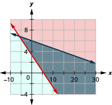
- ⓒ No
- ⓓ Yes
Mark is attempting to build muscle mass and so he needs to eat at least an additional 80 grams of protein a day. A bottle of protein water costs $3.20 and a protein bar costs $1.75. The protein water supplies 27 grams of protein and the bar supplies 16 gram. If he has $ 10 dollars to spend
- ⓐ Write a system of inequalities to model this situation.
- ⓑ Graph the system.
- ⓒ Could he buy 3 bottles of protein water and 1 protein bar?
- ⓓ Could he buy no bottles of protein water and 5 protein bars?
Jocelyn desires to increase both her protein consumption and caloric intake. She desires to have at least 35 more grams of protein each day and no more than an additional 200 calories daily. An ounce of cheddar cheese has 7 grams of protein and 110 calories. An ounce of parmesan cheese has 11 grams of protein and 22 calories.
- ⓐ Write a system of inequalities to model this situation.
- ⓑ Graph the system.
- ⓒ Could she eat 1 ounce of cheddar cheese and 3 ounces of parmesan cheese?
- ⓓ Could she eat 2 ounces of cheddar cheese and 1 ounce of parmesan cheese?
Solution
- ⓐ
-
ⓑ
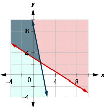
- ⓒ Yes
- ⓓ No
Mark is increasing his exercise routine by running and walking at least 4 miles each day. His goal is to burn a minimum of 1,500 calories from this exercise. Walking burns 270 calories/mile and running burns 650 calories.
ⓐ Write a system of inequalities to model this situation.
ⓑ Graph the system.
ⓒ Could he meet his goal by walking 3 miles and running 1 mile?
ⓓ Could he meet his goal by walking 2 miles and running 2 mile?
Everyday Math
Tickets for an American Baseball League game for 3 adults and 3 children cost less than $75, while tickets for 2 adults and 4 children cost less than $62.
- ⓐ Write a system of inequalities to model this problem.
- ⓑ Graph the system.
- ⓒ Could the tickets cost $20 for adults and $8 for children?
- ⓓ Could the tickets cost $15 for adults and $5 for children?
Solution
- ⓐ
-
ⓑ
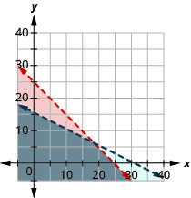
- ⓒ No
- ⓓ Yes
Grandpa and Grandma are treating their family to the movies. Matinee tickets cost $4 per child and $4 per adult. Evening tickets cost $6 per child and $8 per adult. They plan on spending no more than $80 on the matinee tickets and no more than $100 on the evening tickets.
- ⓐ Write a system of inequalities to model this situation.
- ⓑ Graph the system.
- ⓒ Could they take 9 children and 4 adults to both shows?
- ⓓ Could they take 8 children and 5 adults to both shows?
Writing Exercises
Graph the inequality . How do you know which side of the line should be shaded?
Solution
Answers will vary.
Graph the system . What does the solution mean?
Self Check
ⓐ After completing the exercises, use this checklist to evaluate your mastery of the objectives of this section.
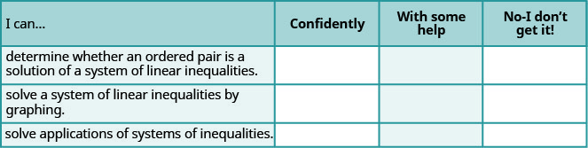
ⓑ After reviewing this checklist, what will you do to become confident for all objectives?
Chapter 5 Review Exercises
Solve Systems of Equations by Graphing
Determine Whether an Ordered Pair is a Solution of a System of Equations.
In the following exercises, determine if the following points are solutions to the given system of equations.
ⓐ ⓑ
Solution
ⓐ no ⓑ yes
ⓐ ⓑ
Solve a System of Linear Equations by Graphing
In the following exercises, solve the following systems of equations by graphing.
Solution
Solution
Solution
coincident lines
Determine the Number of Solutions of a Linear System
In the following exercises, without graphing determine the number of solutions and then classify the system of equations.
Solution
infinitely many solutions, consistent system, dependent equations
Solution
no solutions, inconsistent system, independent equations
Solve Applications of Systems of Equations by Graphing
LaVelle is making a pitcher of caffe mocha. For each ounce of chocolate syrup, she uses five ounces of coffee. How many ounces of chocolate syrup and how many ounces of coffee does she need to make 48 ounces of caffe mocha?
Solution
LaVelle needs 8 ounces of chocolate syrup and 40 ounces of coffee.
Eli is making a party mix that contains pretzels and chex. For each cup of pretzels, he uses three cups of chex. How many cups of pretzels and how many cups of chex does he need to make 12 cups of party mix?
Solve Systems of Equations by Substitution
Solve a System of Equations by Substitution
In the following exercises, solve the systems of equations by substitution.
Solution
Solution
Solution
no solution
Solve Applications of Systems of Equations by Substitution
In the following exercises, translate to a system of equations and solve.
The sum of two number is 55. One number is 11 less than the other. Find the numbers.
Solution
The numbers are 22 and 33.
The perimeter of a rectangle is 128. The length is 16 more than the width. Find the length and width.
The measure of one of the small angles of a right triangle is 2 less than 3 times the measure of the other small angle. Find the measure of both angles.
Solution
The measures are 23 degrees and 67 degrees.
Gabriela works for an insurance company that pays her a salary of $32,000 plus a commission of $100 for each policy she sells. She is considering changing jobs to a company that would pay a salary of $40,000 plus a commission of $80 for each policy sold. How many policies would Gabriela need to sell to make the total pay the same?
Solve Systems of Equations by Elimination
Solve a System of Equations by Elimination
In the following exercises, solve the systems of equations by elimination.
Solution
Solution
Solution
Solve Applications of Systems of Equations by Elimination
In the following exercises, translate to a system of equations and solve.
The sum of two numbers is . Their difference is . Find the numbers.
Solution
The numbers are and .
Omar stops at a donut shop every day on his way to work. Last week he had 8 donuts and 5 cappuccinos, which gave him a total of 3,000 calories. This week he had 6 donuts and 3 cappuccinos, which was a total of 2,160 calories. How many calories are in one donut? How many calories are in one cappuccino?
Choose the Most Convenient Method to Solve a System of Linear Equations
In the following exercises, decide whether it would be more convenient to solve the system of equations by substitution or elimination.
Solution
elimination
Solve Applications with Systems of Equations
Translate to a System of Equations
In the following exercises, translate to a system of equations. Do not solve the system.
The sum of two numbers is . One number is two less than twice the other. Find the numbers.
Solution
The numbers are –10 and –22
Four times a number plus three times a second number is . Twice the first number plus the second number is three. Find the numbers.
Last month Jim and Debbie earned $7,200. Debbie earned $1,600 more than Jim earned. How much did they each earn?
Solution
Debbie earned $4400 and Jim earned $2800
Henri has $24,000 invested in stocks and bonds. The amount in stocks is $6,000 more than three times the amount in bonds. How much is each investment?
Solve Direct Translation Applications
In the following exercises, translate to a system of equations and solve.
Pam is 3 years older than her sister, Jan. The sum of their ages is 99. Find their ages.
Solution
Pam is 51 and Jan is 48.
Mollie wants to plant 200 bulbs in her garden. She wantsall irises and tulips. She wants to plant three times as many tulips as irises. How many irises and how many tulips should she plant?
Solve Geometry Applications
In the following exercises, translate to a system of equations and solve.
The difference of two supplementary angles is 58 degrees. Find the measures of the angles.
Solution
The measures are 119 degrees and 61 degrees.
Two angles are complementary. The measure of the larger angle is five more than four times the measure of the smaller angle. Find the measures of both angles.
Becca is hanging a 28 foot floral garland on the two sides and top of a pergola to prepare for a wedding. The height is four feet less than the width. Find the height and width of the pergola.
Solution
The pergola is 8 feet high and 12 feet wide.
The perimeter of a city rectangular park is 1428 feet. The length is 78 feet more than twice the width. Find the length and width of the park.
Solve Uniform Motion Applications
In the following exercises, translate to a system of equations and solve.
Sheila and Lenore were driving to their grandmother’s house. Lenore left one hour after Sheila. Sheila drove at a rate of 45 mph, and Lenore drove at a rate of 60 mph. How long will it take for Lenore to catch up to Sheila?
Solution
It will take Lenore 3 hours.
Bob left home, riding his bike at a rate of 10 miles per hour to go to the lake. Cheryl, his wife, left 45 minutes hour) later, driving her car at a rate of 25 miles per hour. How long will it take Cheryl to catch up to Bob?
Marcus can drive his boat 36 miles down the river in three hours but takes four hours to return upstream. Find the rate of the boat in still water and the rate of the current.
Solution
The rate of the boat is 10.5 mph. The rate of the current is 1.5 mph.
A passenger jet can fly 804 miles in 2 hours with a tailwind but only 776 miles in 2 hours into a headwind. Find the speed of the jet in still air and the speed of the wind.
Solve Mixture Applications with Systems of Equations
Solve Mixture Applications
In the following exercises, translate to a system of equations and solve.
Lynn paid a total of $2,780 for 261 tickets to the theater. Student tickets cost $10 and adult tickets cost $15. How many student tickets and how many adult tickets did Lynn buy?
Solution
Lynn bought 227 student tickets and 34 adult tickets.
Priam has dimes and pennies in a cup holder in his car. The total value of the coins is $4.21. The number of dimes is three less than four times the number of pennies. How many dimes and how many pennies are in the cup?
Yumi wants to make 12 cups of party mix using candies and nuts. Her budget requires the party mix to cost her $1.29 per cup. The candies are $2.49 per cup and the nuts are $0.69 per cup. How many cups of candies and how many cups of nuts should she use?
Solution
Yumi should use 4 cups of candies and 8 cups of nuts.
A scientist needs 70 liters of a 40% solution of alcohol. He has a 30% and a 60% solution available. How many liters of the 30% and how many liters of the 60% solutions should he mix to make the 40% solution?
Solve Interest Applications
In the following exercises, translate to a system of equations and solve.
Jack has $12,000 to invest and wants to earn 7.5% interest per year. He will put some of the money into a savings account that earns 4% per year and the rest into CD account that earns 9% per year. How much money should he put into each account?
Solution
Jack should put $3600 into savings and $8400 into the CD.
When she graduates college, Linda will owe $43,000 in student loans. The interest rate on the federal loans is 4.5% and the rate on the private bank loans is 2%. The total interest she owes for one year was $1585. What is the amount of each loan?
Graphing Systems of Linear Inequalities
Determine Whether an Ordered Pair is a Solution of a System of Linear Inequalities
In the following exercises, determine whether each ordered pair is a solution to the system.
ⓐ ⓑ
Solution
ⓐ yes ⓑ yes
ⓐ ⓑ
Solve a System of Linear Inequalities by Graphing
In the following exercises, solve each system by graphing.
Solution
Solution
Solution
No solution
Solve Applications of Systems of Inequalities
In the following exercises, translate to a system of inequalities and solve.
Roxana makes bracelets and necklaces and sells them at the farmers’ market. She sells the bracelets for $12 each and the necklaces for $18 each. At the market next weekend she will have room to display no more than 40 pieces, and she needs to sell at least $500 worth in order to earn a profit.
- ⓐ Write a system of inequalities to model this situation.
- ⓑ Graph the system.
- ⓒ Should she display 26 bracelets and 14 necklaces?
- ⓓ Should she display 39 bracelets and 1 necklace?
Solution
ⓐ
ⓑ
ⓒ yes
ⓓ no
Annie has a budget of $600 to purchase paperback books and hardcover books for her classroom. She wants the number of hardcover to be at least 5 more than three times the number of paperback books. Paperback books cost $4 each and hardcover books cost $15 each.
- ⓐ Write a system of inequalities to model this situation.
- ⓑ Graph the system.
- ⓒ Can she buy 8 paperback books and 40 hardcover books?
- ⓓ Can she buy 10 paperback books and 37 hardcover books?
Practice Test
For the following set of equations, determine if each ordered pair is a solution.
ⓐ ⓑ
Solution
ⓐ yes ⓑ no
In the following exercises, solve the following systems by graphing.
Solution
In the following exercises, solve each system of equations. Use either substitution or elimination.
Solution
Solution
infinitely many solutions
In the following exercises, translate to a system of equations and solve.
The sum of two numbers is −24. One number is 104 less than the other. Find the numbers.
Solution
The numbers are 40 and –64
Ramon wants to plant cucumbers and tomatoes in his garden. He has room for 16 plants, and he wants to plant three times as many cucumbers as tomatoes. How many cucumbers and how many tomatoes should he plant?
Two angles are complementary. The measure of the larger angle is six more than twice the measure of the smaller angle. Find the measures of both angles.
Solution
The measures of the angles are 28 degrees and 62 degrees.
On Monday, Lance ran for 30 minutes and swam for 20 minutes. His fitness app told him he had burned 610 calories. On Wednesday, the fitness app told him he burned 695 calories when he ran for 25 minutes and swam for 40 minutes. How many calories did he burn for one minute of running? How many calories did he burn for one minute of swimming?
Kathy left home to walk to the mall, walking quickly at a rate of 4 miles per hour. Her sister Abby left home 15 minutes later and rode her bike to the mall at a rate of 10 miles per hour. How long will it take Abby to catch up to Kathy?
Solution
It will take Kathy of an hour (or 10 minutes).
It takes hours for a jet to fly 2,475 miles with a headwind from San Jose, California to Lihue, Hawaii. The return flight from Lihue to San Jose with a tailwind, takes 5 hours. Find the speed of the jet in still air and the speed of the wind.
Liz paid $160 for 28 tickets to take the Brownie troop to the science museum. Children’s tickets cost $5 and adult tickets cost $9. How many children’s tickets and how many adult tickets did Liz buy?
Solution
Liz bought 23 children’s tickets and 5 adult tickets.
A pharmacist needs 20 liters of a 2% saline solution. He has a 1% and a 5% solution available. How many liters of the 1% and how many liters of the 5% solutions should she mix to make the 2% solution?
Translate to a system of inequalities and solve.
Andi wants to spend no more than $50 on Halloween treats. She wants to buy candy bars that cost $1 each and lollipops that cost $0.50 each, and she wants the number of lollipops to be at least three times the number of candy bars.
- ⓐ Write a system of inequalities to model this situation.
- ⓑ Graph the system.
- ⓒ Can she buy 20 candy bars and 70 lollipops?
- ⓓ Can she buy 15 candy bars and 65 lollipops?
Solution
ⓐ
ⓑ
ⓒ No
ⓓ Yes